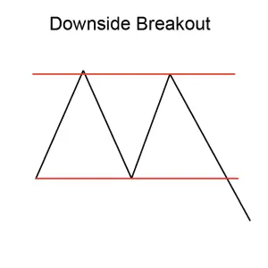
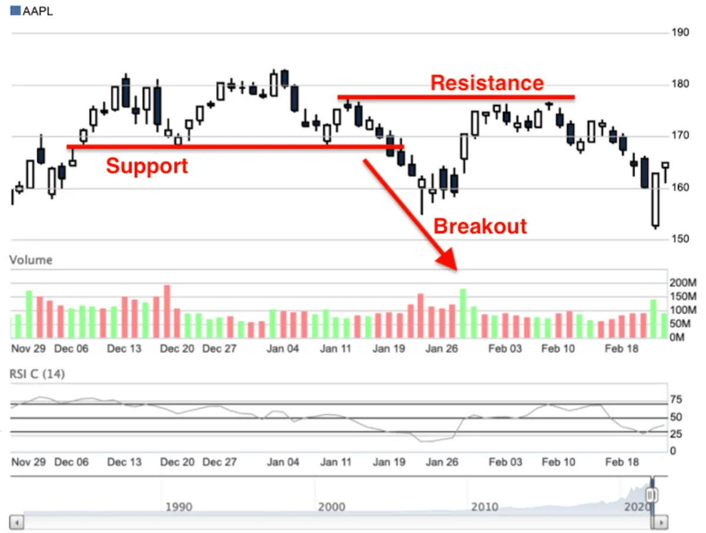

Implicaciones
Un Downside Breakout se considera una señal bearish, marcando una breakout de un rango de negociación para iniciar una nueva tendencia descendente.
Descripción
Una brecha hacia abajo ocurre cuando los precios salen por la parte inferior de un rango de negociación y bajan rápidamente a medida que se forma una nueva tendencia descendente. Parece que el mercado está siendo inundado con órdenes de venta. Por lo general hay lagunas en toda esta actividad. Este patrón puede durar unos días a unas semanas.

Criterios que respaldan
Duración del rango de negociación
La duración del rango de negociación para el que se produjo el breakout puede proporcionar una indicación de la fuerza del breacout. Cuanto mayor sea la duración del rango de negociación, más significativa será la breakout.
Estreñimiento del rango de negociación
La "estrechura" del rango de negociación también se puede utilizar para medir la breakout. Para determinar el estreñimiento del rango de negociación, compare el límite superior con el limite inferior de la gama de operaciones. Si el rango de negociación tiene una pequeña diferencia entre el límite superior y inferior (lo que lo hace estrecho), entonces la breakout se considera más fuerte y más confiable.
Apoyo y resistencia
Busca una región de apoyo o resistencia. Una región de consolidación de precios o una fuerte línea de apoyo y resistencia en o alrededor del precio objetivo es un indicador fuerte de que el precio se moverá a ese punto.
Tendencia de media móvil
Mira la dirección de la tendencia de la media móvil. Para patrones de corta duración, utilice una media móvil de 50 días, para patrones más largos utilice un promedio móvil de 200 días. La media móvil debe cambiar de dirección durante la duración del patrón y debe dirigirse en la dirección indicada por el patrón.
Volumen
Un fuerte pico de volumen el día de la confirmación del patrón es un indicador fuerte en apoyo del potencial para este patrón. El pico de volumen debe estar significativamente por encima de la media del volumen durante la duración del patrón. Además, el volumen durante la duración del patrón debería estar disminuyendo en promedio.
Criterios que refuten
Duración del rango de negociación
La duración del rango de negociación para el que se produjo el breakout puede proporcionar una indicación de la fuerza del breacout. Cuanto más corta sea la duración del intervalo de negociación, menos significativa será la breakout.
Estreñimiento del rango de negociación
La "estrechura" del rango de negociación también se puede utilizar para medir la breakout. Para determinar el estreñimiento del rango de negociación, compare el límite superior con el limite inferior de la gama de operaciones. Si el rango de negociación tiene una gran diferencia entre el límite superior y inferior (lo que lo hace amplio), entonces la breakout se considera más débil y menos confiable.
Sin aumento de volumen en la confirmación
La falta de un pico de volumen el día de la confirmación del patrón es una indicación de que este patrón puede no ser fiable. Además, si el volumen ha permanecido constante, o estaba aumentando, durante la duración del patrón, entonces este patrón debe considerarse menos fiable.
Tendencia de media móvil
Mira la dirección de la tendencia de la media móvil. Para patrones de corta duración, utilice una media móvil de 50 días, para patrones más largos utilice un promedio móvil de 200 días. Una media móvil que está en tendencia en la dirección opuesta a la indicada por el patrón es una indicación de que este patrón no es fiable.
